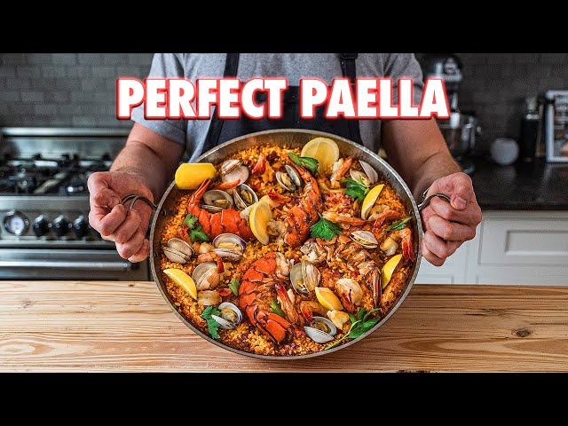

Spanish Paella

The Perfect Rice Recipe (Spanish Paella)
Paella is a well-known Spanish dish of rice, seafoods, meat and vegetables, flavored by saffron. The name comes from the Valencian word for the pan used to cook it, the paellera, which is a wide, shallow , round pan with two (2) short handles.
This paella recipe by famous Youtube Chef, Joshua Weissman, has a mixture of spanish chorizo, chicken, littleneck clams, shrimp, and lobster.
Ingredients
Shrimp Stock:
- shells from 1lb of shrimp
- 1 onion
- 5 bay leaves
- 4.5 cups of water
Paella:
- 5 oz Spanish chorizo
- 2 tps olive oil
- 1 yellow onion
- 1 red bell pepper
- 2 cloves of garlic
- 1 cup canned diced tomatoes
- 1 bay leaf
- 2.5 tps spanish smoked paprika
- 1 cup dry white wine
- 1/2 lbs boneless skinless chicken thighs
- 3 cups bomba rice
- 1.5 tps saffron threads
- 3 cups shrimp stock
- 2.5 cups chicken stock
- 1 lb shrimp w/ shells
- 2 large lobster tails
- 1 lb littleneck claim
- 2 lemons, cut into wedges
- fresh parsley for serving
Instructions
Shrimp Stock:
- Place shrimp shells in a medium-size pot along with onion, bay leaves, and water; place on the stove, bring it to a boil over medium-high heat, and then reduce the temperature to medium-low and simmer for 15-20 minutes or until flavored to your liking.
- Strain it through a fine-mesh sieve and reserve.
Paella
- Grease a medium-size pot with spray oil, add chicken thighs, sear them for about three minutes, occasionally tossing until you get some nice color (no need to cook them all the way through).
- Remove the chicken; add chicken and shrimp stock, heat to medium-high until it comes to a boil, turn it down to low and add saffron (lightly crushed).
- In a 15” paella pan (or saute pan), heat up olive oil over medium heat; once it begins to shimmer, add chorizo, cook it until the chorizo starts to get a little crispy and its fat render; next, add your sofrito, consisting on a mixture of onion, bell pepper, and garlic, all tossed together.
- Season generously with salt and pepper, saute for three to four minutes or until softened, then add diced tomatoes, bay leaf, and smoked paprika. Season a taste with salt and cook that down, often stirring until almost all the liquid is gone, about three minutes.
- Then add white wine let it simmer down until the majority reduces, about five to eight minutes. Add your chicken back, stir until the chicken is hot, add “bomba” rice, mix, allow the rice to toast for about one minute, and slowly pour in your hot saffron broth. Gently shake the pan to even up the rice, let it come to a simmer over medium-low, and cook uncovered for 15 minutes. (if a lot of the liquid evaporates, add another cup or so of water and simmer for 15 - 18 minutes)
- Add your lobster tails, arranging them in a pattern like this and nestling them into your rice, flesh side down; then nestle your shrimps all around the rice, finally nestle your cleaned littleneck clams. Cook it for another 5-8 minutes.
- Once it looks like there is anymore liquid bubbling and starts to smell a little toasted on the bottom of the pan, cut the heat and cover with foil for 10-12 minutes. (if the lobster has not finished cooking, place the pan covered in the oven at 350F for 5-8 minutes.)
- Remove the foil, drizzle some olive oil, scatter around some lemon cheeks, and finish it with fresh, flat parsley leaves.